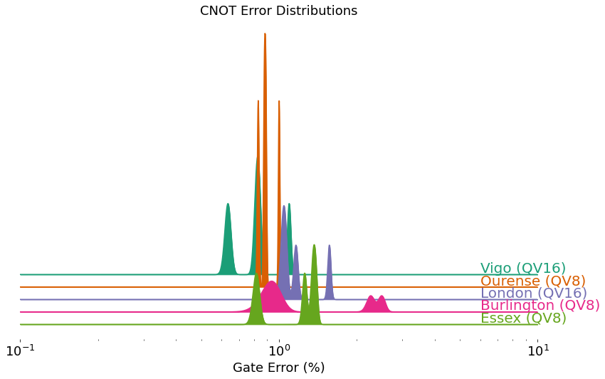
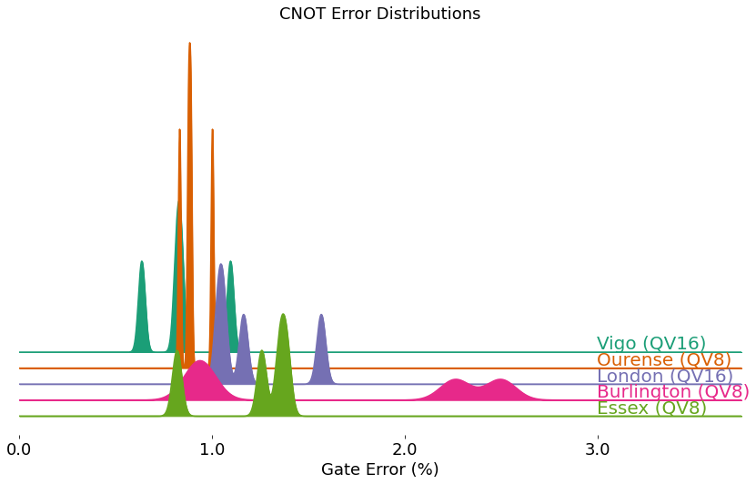

CNOT error density¶
import datetime
from qiskit import IBMQ
from kaleidoscope.qiskit.backends import cnot_error_density
Simple multi-system comparison¶
IBMQ.load_account()
provider = IBMQ.get_provider(group='open')
backends = provider.backends(simulator=False,
filters=lambda b: b.configuration().n_qubits==5)
cnot_error_density(backends)

Historical data with custom colors¶
backend = provider.backends.ibmq_vigo
props = [backend.properties(datetime=datetime.datetime(2020, kk, 1)) for kk in range(2, 7)]
cnot_error_density(props, offset=200,
colors=['#d6d6d6', '#bebebe', '#a6a6a6', '#8e8e8e', '#ff007f'])
